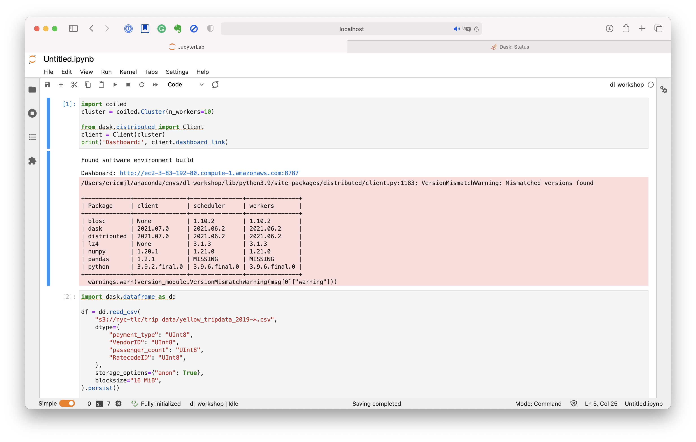
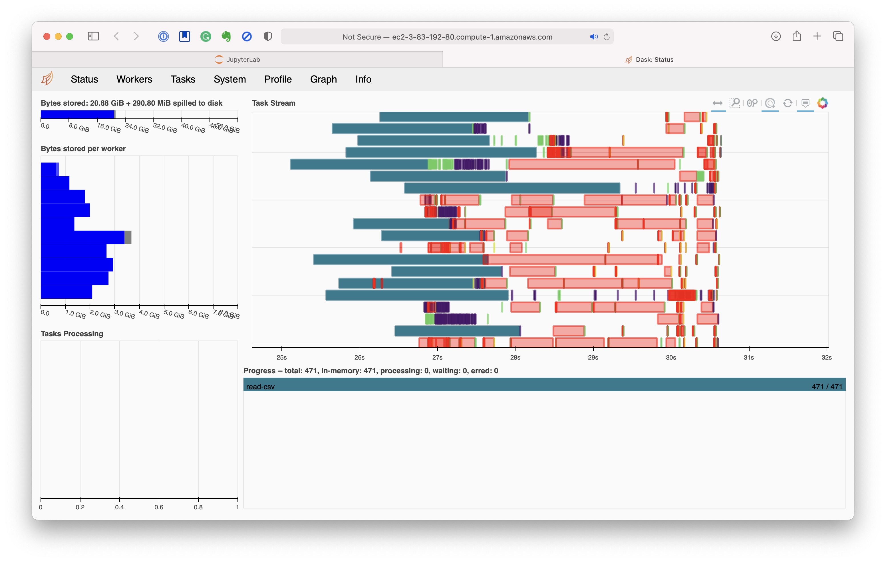

written by Eric J. Ma on 2021-07-12 | tags: data science dask coiled computing computation
Today I finally had a chance to test-drive Coiled Computing's product. Oh boy, am I impressed!
The first time I first tasted parallel computation on the MIT GridEngine compute cluster in 2014. Ever since then, one thing I've been dreaming of is the ability to burst my computation into remote machines from my little laptop.
The computing model I'm thinking of isn't exactly an SSH tunnel, as this model presumes a few things:
The computing model I'm thinking of is as follows:
You can think of this as akin to having 12 Factor App-like computing environments.
Coiled Computing's product provides exactly the computing model that I'm thinking of.
By being built on top of Dask, the critical problem that Coiled solves,
which is also its fundamental value proposition,
is to orchestrate the creation of ephemeral cloud compute resources
into a Dask cluster with access to a replica of our local compute environment.
Locally, we only need to worry about having a configuration file,
such as an environment.yml file,
that declares what kind of compute environment is required.
Coiled will read that config file to re-create the environment on the cloud,
optionally on a cloud provider that you get to specify.
Once the Dask cluster is created in the cloud,
we only need to connect to that Dask cluster from a Python session
using Dask's distributed clients.
Once we've done that, if you've got code written against Dask that runs on your little laptop, then literally nothing else needs to change! Execute the rest of your code, whether in a Jupyter notebook or in a Python script.
From my perspective, this is the ideal situation for parallel computation.
Because the computing environment is available locally, I need not worry about not having internet/cluster access when I'm on the road. At the same time, if I'm literally flying in the cloud with WiFi access, I can burst my calculations into the metaphorical compute cloud and do my computing with ease.
Additionally, easy-to-follow documentation is readily available, making it easy for me to create very ephemeral Dask clusters in the cloud that also shut down as soon as my computation is done.
By contrast, at work, I had tried Databricks.
It was helpful for some things that my colleagues needed,
but it was also highly inflexible:
back in 2018, my conda environment was not recognized,
I couldn't develop and use custom software packages in support of a project,
and I most certainly couldn't have
the convenience of a local computation environment.
So I quickly ditched it because of the lack of flexibility.
Moreover, though I shared access to a Linux workstation with colleagues, and even though that Linux workstation could access our HPC cluster, it still required me to SSH every morning. Call me a person pampered with first-world problems, perhaps, and yes, I'll grant you that. Still, you can't deny that needing to SSH every morning is still a friction point. Seeing how easily Coiled replicates my computation environment on the cloud is a really key thing for me; on our HPC, we were guaranteed replicated conda environments because our worker nodes had access to the same filesystem, but on the cloud that was not possible. Coiled makes it possible - in a pretty magical way.
By contrast, Coiled has me smiling to my ears. I'm very impressed with what I see here! Clarke's third law states that "any sufficiently advanced technology is indistinguishable from magic." Because I have helped alpha-test Coiled's product and successfully borked it on my machines before, I sort of know what the product's internals are like. (I will respectfully decline to reveal what I know, though, as it concerns my friends' livelihoods.) However, even with that knowledge, Coiled feels like magic. That was the exact feeling I had when I first test-drove their demo code successfully on my laptop.


Kudos to Matt and Hugo, the two whom I know most closely, and the rest of the team, who have really built a fantastic product! I am excited to try things out on my projects at home :).